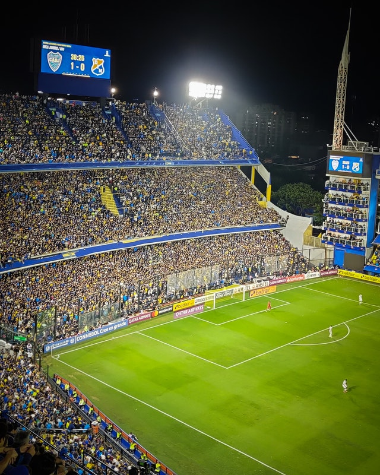

Argentina
La Republica Argentina es un pais soberano ubicado en America de Sur, se encuentra en el extremo sur y sudeste de dicho subcontinente. Cuenta con 23 provincias, mas la Ciudad Autonoma de Buenos Aires; esta ultima designada como capital federal del pais.Su idioma oficial es el espanol.
Este pais posee una superficie total de 2.795.677 km2, la cual se extiende 3.694 kilómetros de norte a sur y 1.423 kilómetros de este a oeste.Su gran superficie permite encontrar diversos climas y paisajes naturales, los cuales convierten a la Argentina en uno de los mejores destinos del mundo para conocer y recorrer.
Cultura y principales costumbres
El mate: Sin dudas, tomar mate es una de las principales costumbres presentes dentro de la poblacion en el pais, se suele compartir en reuniones con falmiliares y amigos. Esta bebida se prepara con agua caliente y yerba mate, la cual se cultiva en el noreste de Argentina, sobre todo en Corrientes y Misiones.
El TangoPrecenciar un espectaculo de tango es una gran experiencia, y que mejor que hacerlo en el pais donde nacio.Este genero musical y de baile, surgio en Buenos Aires y luego se extendio por todo el mundo, logrando gran popularidad.
El futbol:Si bien es un deporte mundial, el futbol en la Argentina toma gran importancia, ya que no solo se juega a nivel profecional, sino que es una actividad presente en cada ciudad y pueblo del pais. En los estadios argentinos, el futbol se vive con una gran pasion, y precenciar un partido profesional es una gran idea si decides visir el pais. Los principales estadios se encuentran en Buenos Aires, Santa Fe, Cordoba, Mendoza y Tucuman.
